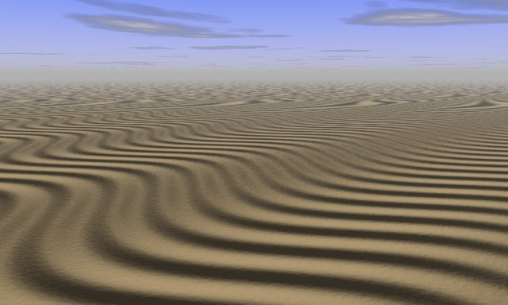
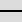

Utilisation d'un relief Geomorph
comme "carte de normales" Povray
Le script crack_bumptest.pov conçu
en développant l'outil
de génération de craquelures peut être
employé avec d'autres types de terrain pour produire des
résultats intéressant. Voici deux exemples.

Ce terrain ondulé a été créé de
cette façon:
- Créer un terrain "uniforme" gris
 (le
défaut quand vous démarrez
Geomorph).
(le
défaut quand vous démarrez
Geomorph).
- Appelez l'outil "ondes"
 :
:
- Dans l'onglet 1 (celui avec une onde prédéfinie
à la verticale), réglez l'amplitude à environ 10
et la période à 6.
- Dans l'onglet 2 (celui avec une onde dans l'axe nord-sud),
réglez l'amplitude à environ 55, la période
à 9 et donnez une rotation de 90°.
- Choisissez la caméra prédéfinie 3, faites
une rotation de 135° dans l'aperçu.
- Exécutez
 crack_bumptest.pov.
crack_bumptest.pov.
Cet autre terrain a été créé de cette
façon:
- Choisissez un terrain d' "addition progressive de surfaces"
 .
.
- Dans le dialogue de création et dans le sous-dialogue
"Surface primitive" ->
"Filtre de forme", choisissez l'image "sans filtre"  comme bloc
de construction.
- En continuant dans le dialogue de création,
déroulez le sous-dialogue "Contrôle des longueurs
d'ondes", initialisez toutes les longueurs d'onde à 0 (il y a un
bouton unique pour cela) et réglez la longueur d'onde 64
à 50 ou 60.
- Exécutez crack_bumptest.pov.
Dans le dialogue de création, vous pouvez aussi essayer
différents niveaux de déplacement dans le plan XY.
_________________________
Écrit en décembre 2006
Contact:
Patrice St-Gelais